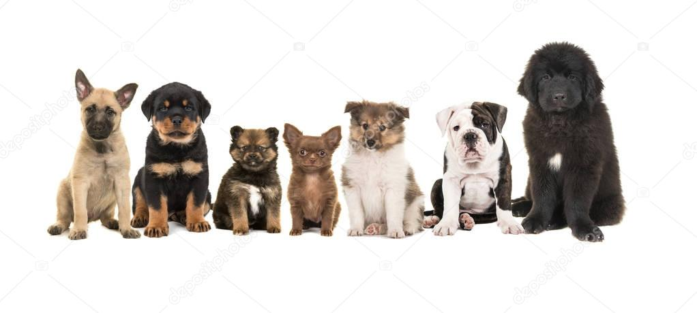

All dogs are great, but can you guess which one does better doggy job? And if this inspires you to adopt a dog you can click here to adopt your local puppy
Which dog is known for racing on a track?
Which dog is known to find and kill vermin?
Which dog is known to swim the best?
Which dog has best sense of smell?